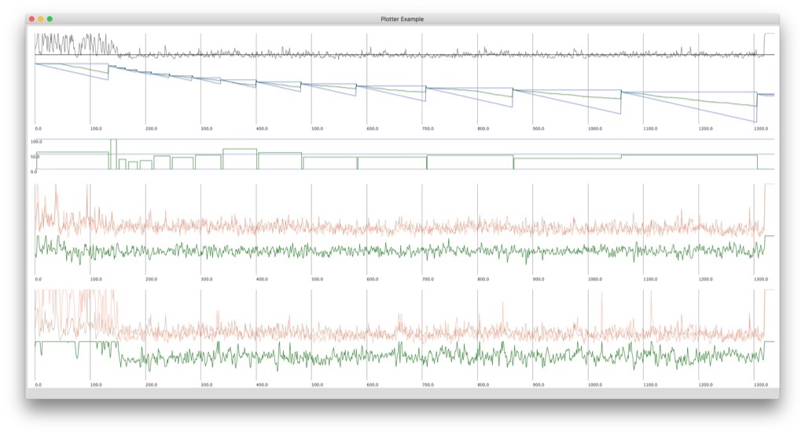
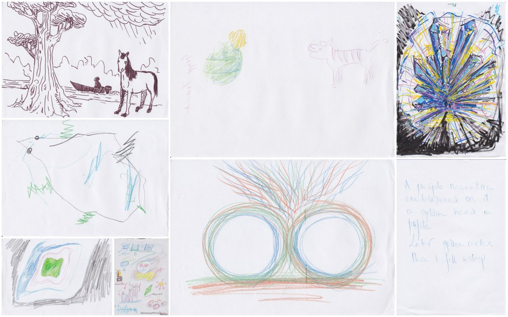

Title: NeuroMeditation with Music
Presentation, performance and drawing, Q/A
@ 2019, Cambridge Festival of Ideas
orientation
shamanic methods to explore for first BCMI soundscape
explanation of 30-minute tests
what is different between the 30 min tests and this 20 min performance?
why are the gaming elements absent in this performance?
how shall you listen to the soundscape? Shall you listen to the digital shamans (drums and chakapa) or my live drumming or the other sounds?
shall you watch the screen or not?
how much would you like me to explain before the performance about the mapping between EEG and sounds? If I explain everything, would that affect the way you listen? Perhaps it won’t help you to let go.
to deepen the meditation, I think you should focus you listening on the static/monotone elements of the soundscape, the digital shaman drumming (speakers).
eyes closed is preferred
no intent - no journey :)
would be great if you can draw your ‘visions’ after the performance
Presentation video is being edited.

row 1: theta median FZ (grey) with threshold on 1.5 microVolts (black)
row 2: levels (blue triangles), theta median above threshold (green going down)
row 3: theta median above threshold in % (green steps)
row 4: theta median on P3 and P4 and their coherence below (green)
row 5: theta median on F4 and P4 and their coherence below (green)
these parameters controlled certain aspects of the music in real time
Some interpretations of the journey:
